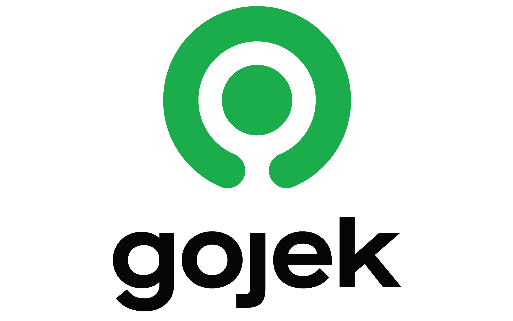

Company Profile
Go-Jek adalah sebuah perusahaan teknologi asal indonesia yang melayani bermacam permintaan jasa yang dapat dipesan melalui panggilan telepon. Pengemudi motor dengan ciri-ciri menggunakan atribut (Jacket dan helmet) yang berwarna hijau kini sangat fenomenal dikalangan masyarakat. Gojek (ditulis bergaya sebagai gojek; sebelumnya ditulis GO-JEK) merupakan Situs web teknologi asal Indonesia yang melayani angkutan melalui jasa ojek. Perusahaan ini didirikan pada tahun 2009 di Jakarta oleh Nadiem Makarim. Saat ini, Gojek telah tersedia di 50 kota di Indonesia. Hingga bulan Juni 2016, aplikasi Gojek sudah diunduh sebanyak hampir 10 juta kali di Google Play pada sistem operasi Android, dan telah tersedia di App Store. Selain di Indonesia, layanan Gojek kini telah tersedia di Vietnam dan Singapura.
Our Vision
Membantu memperbaiki struktur transportasi di Indonesia, memberikan kemudahan bagi masyarakat dalam melaksanakan pekerjaan sehari-hari seperti pengiriman dokumen, belanja harian dengan menggunakan layanan fasilitas kurir, serta turut mensejahterakan kehidupan tukang ojek di Indonesia baik untuk masa kini dan kedepannya. Bertujuan membantu memperbaiki struktur transportasi di Indonesia, memberikan kemudahan bagi masyarakat dalam melaksanakan pekerjaan sehari-hari seperti pengiriman dokumen, belanja harian dengan menggunakan layanan fasilitas kurir, serta turut mensejahterakan kehidupan tukang ojek di Indonesia baik untuk masa kini dan kedepannya.
Our Mission
- Menjadi acuan pelaksanaan kepatuhan dan tata kelola struktur.
- Transportasi yang baik dengan menggunakan kemajuan teknologi.
- Memberikan layanan prima dan solusi yang bernilai tambah kepada pelanggan.
- Membuka lapangan kerja selebar-lebarnya bagi masyarakat Indonesia.
- Meningkatkan kepedulian dan tanggung jawab terhadap lingkungan dan sosial
Product and Main Services
- Go-Ride Go-Ride adalah layanan transportasi sepeda motor yang dapat mengantar anda ke berbagai tempat dengan lebih mudah dan lebih cepat.
- Go-Car Go-Car adalah layanan transportasi menggunakan mobil untuk mengantarkan Anda kemanapun dengan nyaman.
- Go-Food Go-Food adalah layanan pesan-antar makanan dengan lebih dari 30.000 daftar restauran.
- Go-Mart Go-Mart adalah layanan yang dapat digunakan untuk berbelanja ribuan jenis barang dari berbagai macam toko di area anda.
- Go-Send Go-Send adalah layanan kurir instan yang dapat digunakan untuk mengirim surat dan barang dalam waktu 60 menit.
- Go-Box Go-Box adalah layanan pindah barang ukuran besar menggunakan truk/ mobil bak/ blind van.
- Go-Tix Go-Tix adalah layanan informasi acara dengan akses pembelian dan pengantaran tiket langsung ke tangan Anda.
- Go-Med Go-Med merupakan hasil kolaborasi antara Go-Jek dengan Halodoc. Go-Med tidak menyediakan produk apapun, melainkan menghubungkan pengguna dengan lebih dari 1000 apotek di Jabodetabek, Bandung, dan Surabaya.
- Go-Massage Go-Massage adalah layanan jasa pijat kesehatan professional langsung ke rumah anda.
- Go-Clean Go-Clean adalah layanan jasa kebersihan professional untuk membersihkan kamar kos, rumah, dan kantor Anda.
- Go-Glam Go-Glam adalah layanan jasa perawatan kecantikan untuk manicure-pedicure, creambath, waxing, dan lainnya langsung ke rumah Anda.
- Go-Auto Go-Auto adalah layanan perawatan cuci, servis, dan layanan darurat untuk kendaraan baik mobil maupun motor kapanpun dan dimana pun.
- Go-Busway Go-Busway adalah layanan untuk memonitor jadwal layanan bus Transjakarta dan memesan Go-Ride untuk mengantar Anda kesana.
- Go-Pulsa Go-Pulsa merupakan layanan untuk membeli pulsa atau internet dengan sistem pembayaran menggunakan saldo Go-Pay.
- Go-Bills Go-Bills merupakan layanan pembayaran tagihan seperti tagihan listrik, membeli token listrik hingga BPJS dengan sistem pembayaran menggunakan saldo Go-Pay.
- Go-Points Go-Points adalah program loyalty dari Go-Jek khusus untuk pengguna Go-Pay. Setiap transaksi menggunakan Go-Pay akan mendapatkan 1 token, mainkan token, kumpulkan poin dan dapatkan reward menarik.
- Go-Pay Go-Pay adalah layanan dompet virtual untuk memudahkan transaksi Anda di dalam aplikasi Go-Jek.
Company Logo

Company Address
Head Office Pasaraya Blok M Gedung B Lt. 6 Jalan Iskandarsyah II No.7, RW. 2, Melawai, Kebayoran Baru, RT.3/RW.1, Melawai, Kby. Baru Kota Jakarta Selatan, Daerah Khusus Ibukota Jakarta 12160